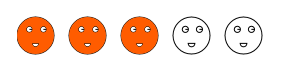

This feature allows you to easily customize the appearance of the rating control. This feature has been developed using HTML5, and rating customizations are updated completely on the client-side. This makes processes faster and gives you a better performance.
The rating control allows the end-user to select a number of stars that represent a rating.
You can customize -
· The shapes used for rating- this allows you to change the shape to anything else other than a star if you want to—you can also add custom shapes that you would want to measure the rating by
· The look and feel, (which also includes the dimensions of the shapes, spacing between the shapes, color, orientation, etc. used) of the Rating control in HTML5
The following figures give you a basic idea of the structure and appearance of Rating control in HTML5:
Figure 185: Default Rating control in HTML5
Figure 186: Rating control in HTML5 with vertical orientation, and heart shapes

Figure 187: HTML5 rating with custom shapes and adjusted spacing
 Where do I find Installed samples?
Where do I find Installed samples?